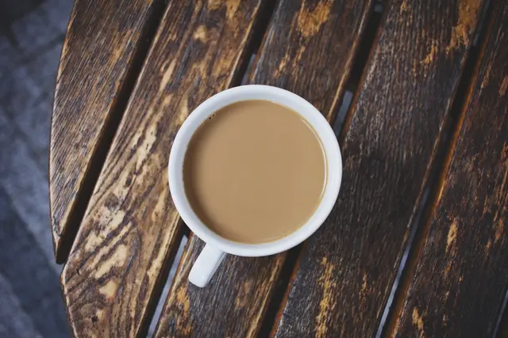
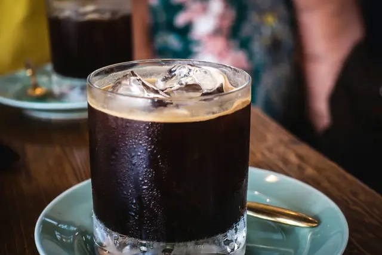
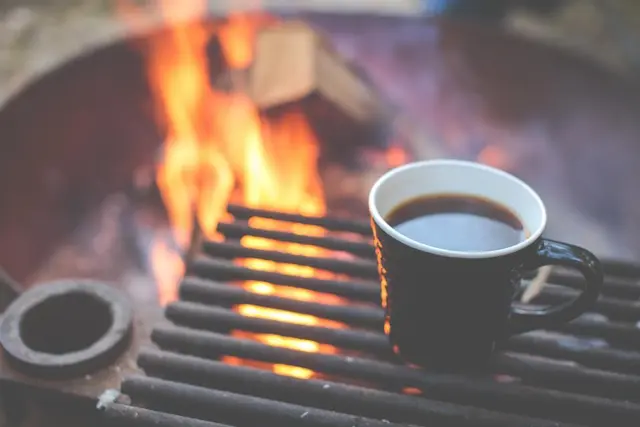

Start here
The guides people read first
If you only upgrade one thing, make it one of these.

Grinders
The Best Coffee Grinder for Beginners
If you only upgrade one thing, upgrade this. Here's which grinder to buy for how you actually brew.
Read the guide →
Gift guide
Coffee Gift Guide: Gifts Coffee People Actually Use
Skip the novelty mug. These are the upgrades coffee people quietly want, at every budget.
Read the guide →
Pour-over
The Best Pour-Over Coffee Setup for Home
The exact dripper, kettle, and scale to brew café-style pour-over in your kitchen, at three budgets.
Read the guide →More buying guides

Espresso
The Best Espresso Machine for Beginners
Lattes at home without a $3,000 setup or a barista certificate.
Read the guide →
Drip coffee
The Best Drip Coffee Maker for Families
Push-button coffee that's actually good, from 'feeds the whole house' to 'coffee nerd approved.'
Read the guide →
Cold brew
The Best Cold Brew Maker for Hot Southern Summers
When it's 95° with 90% humidity, nobody wants hot coffee. Make a week of cold brew for less than two café drinks.
Read the guide →
Outdoors
The Best Camp, Boat & Deer Stand Coffee Makers
Real coffee where there's no outlet: hunting camp, the boat landing, the tailgate.
Read the guide →